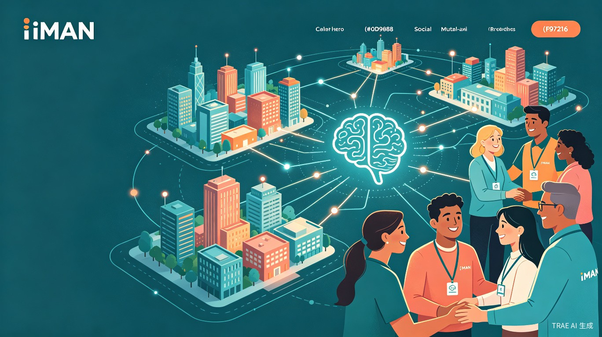
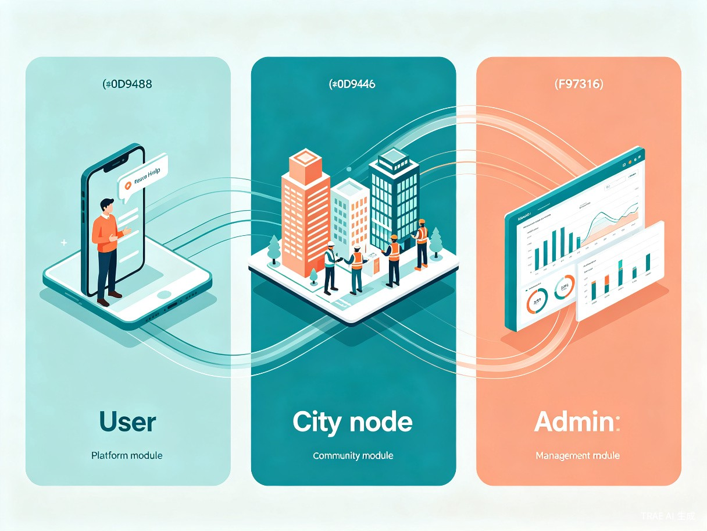
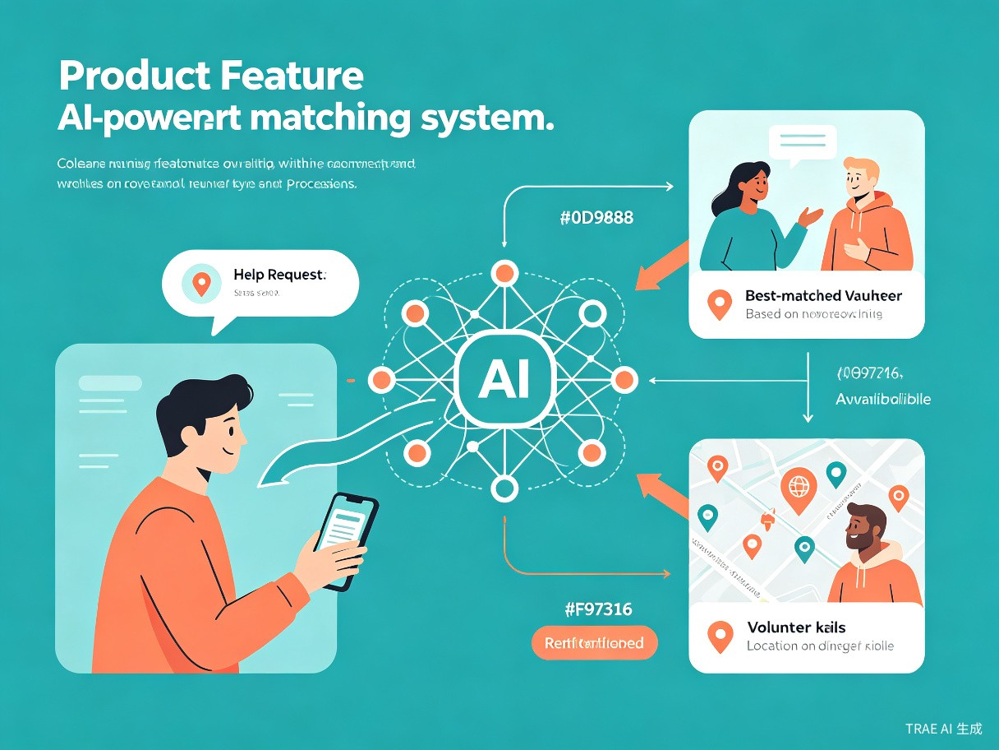
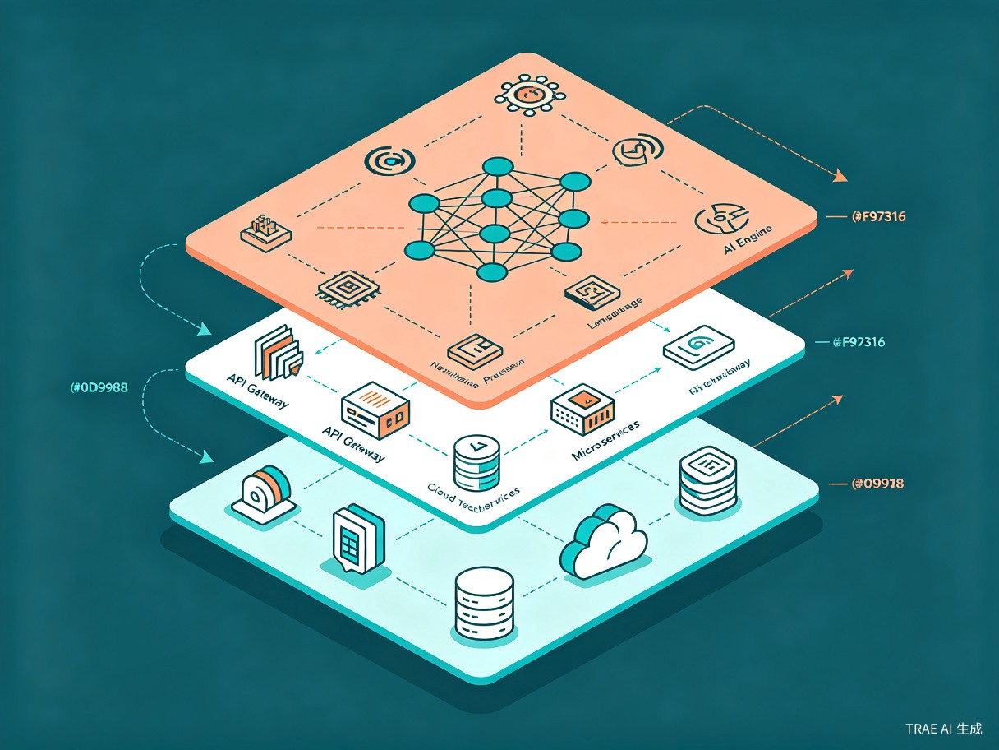

集求助发布、志愿协助、跨城资源调度与智能匹配于一体的社会服务平台，用AI连接每一份善意。
iMAN城际互助联盟是一个面向全社会的智能互助服务平台，通过自然语言交互、AI需求识别、跨城市节点网络和智能匹配引擎，打通求助者与帮助者之间的信息壁垒，构建覆盖多城市的协同互助生态。
传统求助方式存在信息不对称、响应慢、资源错配等核心问题，亟需技术驱动的系统性解决方案。
各城市、各社区、各公益组织之间缺乏统一的信息共享平台，求助信息难以跨区域传播，大量需求被埋没在本地。
求助者需要逐一联系不同组织，志愿者也难以发现适合自己的任务，信息流转链条长、耗时长。
缺乏对志愿者能力、位置、可用时间的精准画像，导致"有需求找不到人、有人找不到事"的资源错配。
当本地资源不足时，跨城市调度缺乏标准化流程和协作机制，应急响应的覆盖面和速度受限。
求助信息真实性难以验证，志愿者服务质量缺乏评价机制，参与各方缺乏有效的信任基础。
缺乏对求助趋势、资源分布、响应效率的数据分析，无法为决策者提供科学依据和预警支持。
通过"自然语言输入 + AI解析 + 智能匹配 + 跨城流转"的核心链路，将非结构化求助转化为标准化任务，实现从需求到响应的全链路智能化。

平台围绕用户端、城市节点端和管理端构建完整的服务闭环，覆盖从求助发起到管理决策的全角色需求。
面向求助者和志愿者，提供自然语言求助发布、任务接取、进度追踪和评价反馈功能。
面向公益组织、社区服务中心和志愿者团队，提供任务管理、资源调度和跨城协作能力。
面向平台运营方和决策者，提供全局监控、数据分析、节点管理和策略配置能力。
每一项核心能力都围绕"让求助更快被响应"这一目标设计，形成从感知到决策的完整智能链路。
用户只需用日常语言描述自己的情况，系统通过NLP引擎自动提取需求类型（紧急求助/生活援助/跨城协助）、紧急程度和所需资源，将非结构化文本转化为标准化任务工单，无需用户填写复杂表单。

结合地理位置、志愿者能力标签、历史响应评价、当前可用状态等多维因素，通过加权评分算法为每个求助任务匹配最优帮助者，确保资源精准投放、响应速度最大化。
当本地资源不足时，系统自动将任务流转至邻近城市节点，通过标准化的任务交接协议和资源调度机制，实现跨区域协同互助。每个城市节点由本地公益组织或社区服务中心运营，确保落地执行能力。
平台支持公益组织、社区服务中心和志愿者团队以组织身份接入，享受专属任务池、团队管理工具和数据看板。组织可自主管理成员、分配任务、统计贡献，形成规模化互助力量。
用户一次自然语言描述，即可触发从需求解析到任务匹配再到跨城流转的全自动化流程。
用户用日常语言描述求助需求
识别类型、紧急度、所需资源
生成结构化工单进入任务池
多维评分匹配最优帮助者
通知匹配志愿者确认接单
线下执行、进度更新、评价闭环
本地不足时自动扩散至邻近节点
flowchart TD
A[用户自然语言描述] --> B[NLP引擎解析]
B --> C{需求类型判断}
C -->|紧急求助| D[高优先级通道]
C -->|生活援助| E[标准任务池]
C -->|跨城协助| F[跨城流转引擎]
D --> G[智能匹配引擎]
E --> G
F --> H[邻近城市节点匹配]
G --> I[志愿者推送通知]
H --> I
I --> J{志愿者确认}
J -->|接受| K[任务执行]
J -->|拒绝| G
K --> L[进度实时更新]
L --> M[完成评价与反馈]
M --> N[数据沉淀与模型优化]
采用分层解耦的微服务架构，以AI引擎为核心驱动，确保系统的高可用、可扩展和智能化。

移动端APP、小程序、Web门户、API Gateway
NLP解析、意图识别、匹配算法、推荐模型
用户服务、任务服务、匹配服务、节点服务
关系数据库、缓存、消息队列、对象存储
iMAN城际互助联盟覆盖紧急救助、日常帮扶、跨城协作等多种社会互助场景。
突发灾害、走失寻人、医疗急救等紧急场景下，系统自动识别高紧急度任务，优先推送给附近具备相关能力的志愿者和组织，同时触发跨城资源调度，确保黄金响应时间内获得帮助。
独居老人照看、残障人士出行协助、留守儿童课业辅导等日常需求，通过社区节点精准匹配本地志愿者，建立长期帮扶关系，提升社区凝聚力和居民幸福感。
当某城市面临物资短缺、专业人员不足时，平台自动将需求扩散至邻近城市节点网络，协调物资转运、人员支援和设备共享，实现区域间的资源互补和协同应急。
多家公益组织通过平台实现信息共享和任务协同，避免重复覆盖和服务盲区，通过统一的数据看板了解区域需求分布，优化资源配置策略。
志愿者通过完成任务积累信用积分和服务时长，系统根据历史表现推荐适合的进阶任务，形成"参与-成长-回馈"的正向循环，激励更多人加入互助网络。
平台沉淀的求助数据经脱敏处理后，可生成城市社会需求热力图、弱势群体分布报告和资源缺口分析，为政府决策和社会治理提供数据支撑。
分阶段推进平台建设，从核心功能验证到规模化运营，逐步构建覆盖全国的城际互助网络。
完成用户端核心功能（自然语言求助、AI解析、智能匹配），选择1-2个试点城市部署城市节点，验证核心业务流程和匹配算法效果。
上线跨城市任务流转引擎，开放公益组织和志愿者团队接入通道，扩展至5-10个区域核心城市，建立初步的城际协同网络。
构建完善的志愿者信用评价体系，上线管理端数据分析平台，接入政府应急管理部门数据接口，形成"平台+政府+社会组织"三方协同生态。
覆盖全国主要城市节点网络，匹配算法基于海量数据持续优化，探索与社会保险、医疗救助等系统的数据打通，实现社会互助的智能化和常态化。
无论你是需要帮助的人、愿意伸出援手的志愿者，还是希望接入平台的公益组织，iMAN都为你敞开大门。